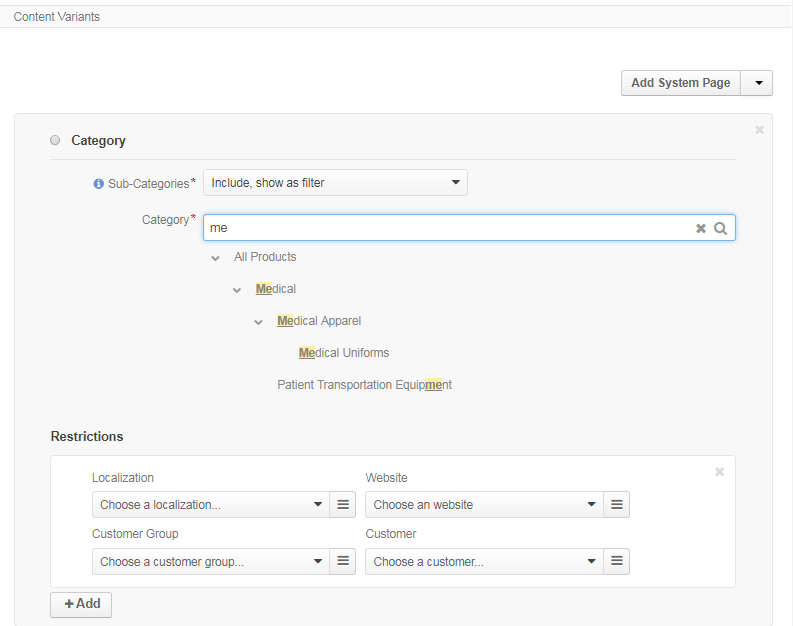
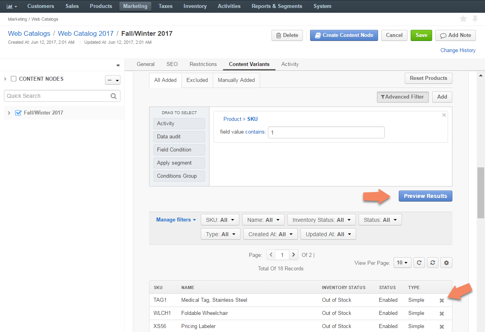
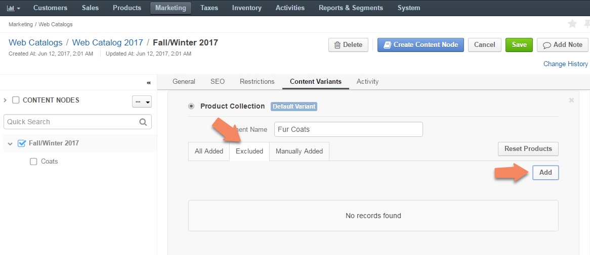
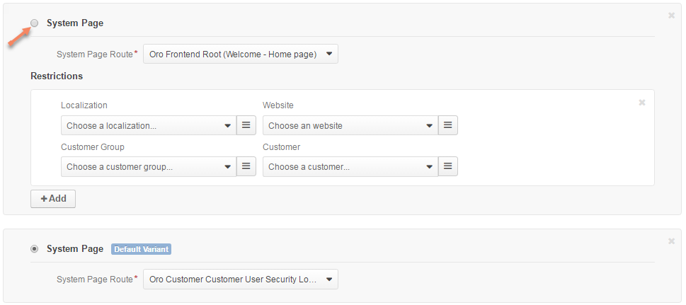

Configure Content Variants for the Content Node¶
This section provides an overview of the content node types and a brief guidance on their set up.
Note
The first content variant that is added to the node is marked as the default variant. When you add more content variants, please, specify the restrictions next to the content variant details. These restrictions will limit the use of this content variant only to specific cases.

Add a System Page (Web Catalog Content)¶
System page is one of the standard pre-designed pages of OroCommerce Store Front (e.g. Requests for Quotes, Open Orders).
To add a system page to the menu on the OroCommerce Store Front:
Select the Add System Page in the Content Variants list.
The following section shows:

Select the system page from the list.
This step applies only to the content nodes with more than one content variant.
When your system page is not selected as a default variant for the content node, there is a Restrictions section beneath the selected system page. In this section, you can define the condition when the system page overrides the default content variant. See the Configure Content Visibility section for more information.
Click Save when you are done filling in the web catalog content node or keep adding the content variants.
Add a Product Page (Web Catalog Content)¶
Product page node is a direct link to the product details in OroCommerce Store Front.
To add a product page node to the menu on the OroCommerce Store Front:
Select the Add Product Page in the Content Variants list.
The following section shows:

Select the product from the list. To use search, start typing the product name or SKU in the box. To use filtering, click on the bars, and select the filtering conditions in the Manage filters section.
This step applies only to the content nodes with more than one content variant.
When your product page is not selected as a default variant for the content node, there is a Restrictions section beneath the selected product. In this section, you can define the condition when the product details override the default content variant. See Configure Content Visibility section for more information.
Click Save when you are done filling in the web catalog content node or keep adding the content variants.
Add a Category (Web Catalog Content)¶
Category node is a direct link to the product category with the list of products in the OroCommerce Store Front.
To add a category node to the menu on the OroCommerce Store Front:
Select Add Category in the Content Variants list.
The following section shows:

Click next to Sub-Categories to select the required option from the list.
The available options are:
Include, show as filter - Used to include all the products assigned to the subcategories of the selected category in addition to the products that are already assigned directly. The subcategories of the first level with at least one product will be displayed as a category filter in the OroCommerce Store Front.

Do not include - Used to include the products assigned only to the selected category. In case the category has a subcategory, its product items will not be displayed.

Select the category from the product catalog tree. To use search, start typing the category name in the box. Use > and v to expand/collapse the tree node.
This step applies only to the content nodes with more than one content variant.
When your category is not selected as a default variant for the content node, there is a Restrictions section beneath the tree of categories. In this section, you can define the condition when the selected category overrides the default content variant. See Configure Content Visibility section for more information.
Click Save when you are done filling in the web catalog content node or keep adding the content variants.
Add a Landing Page (Web Catalog Content)¶
Landing Page node is a link to the custom content page created in the Marketing > Landing Pages section.
To add a landing page node to the menu on the OroCommerce Store Front:
Select the Add Landing Page in the Content Variants list.
The following section shows:

Select the existing landing page from the list. To use search, start typing the keywords in the box to search for the necessary page. To use filtering, click on the bars, and select the filtering conditions in the Manage filters section. Alternatively, you can create a new landing page:
Click + to the right from the Landing page list.
The Create Landing Page pops up.
Fill in the landing page details and contents as described here.
This step applies only to the content nodes with more than one content variant.
When your landing page is not selected as a default variant for the content node, there is a Restrictions section beneath the selected landing page. In this section, you can define the condition when the landing page overrides the default content variant. See Configure Content Visibility section for more information.
Click Save when you are done filling in the web catalog content node or keep adding the content variants.
Add a Product Collection (Web Catalog Content)¶
Product Collection is a filter-based segment that helps you display a custom and dynamic set of products in the web catalog similarly to the category contents.
To add a product collection node to the menu on the OroCommerce Store Front:
Select the Add Product Collection in the Content Variants list.
The following section shows:

To name a segment of the product collection:
Enter the segment name for the product collection in the provided field.

To add a product to the collection via filter:
In the All Added tab, click Advanced Filter to set up a filter that will limit the products list and include only the necessary products.

Note
Advanced Filter is hidden by default.
Click Preview Results to check whether the products found via the filter match your criteria, or to exclude unnecessary items from the list.
Note
To manage the columns displayed Within the products grid, click .
To add a product to the collection manually:
Click Add next to Advanced Filter to add the selected products manually. This can be used in cases when you have few products to be added and there is no need to set up a complicated filter, or when you need to add specific products that may be out of the filter’s scope.

Manually added items will appear both in the Manually Added and All Added tabs.
To exclude items from the collection:
To ensure that specific items are excluded from the list of the product collection and will not be included automatically or manually, click Add in the Excluded tab:
Tick the Selected box to the left of the necessary products, and click Add.
Note
You may use filter on the top of the dialog to limit the scope of the products and make it fit into the visible area.

To reset products:
To clear all filters and reset the product collection to the default state, click Reset Products next to the tabs.

This step applies only to the content nodes with more than one content variant.
When your collection is not selected as a default variant for the content node, there is a Restrictions section beneath the product collection preview. In this section, you can define the condition when the product collection overrides the default content variant. See Configure Content Visibility section for more information.
Click Save when you are done filling in the web catalog content node or keep adding the content variants.
Set Up a Default Content Variant¶
The first content variant that is added to the node is marked as the default variant.
When you add more content variants, they have a dedicated restrictions section next to the content variant details. These restrictions will limit the use of this content variant only to specific cases; the default option is used in any other case.
To set up a newly added content variant as default, select the radio on the top left of its type.
